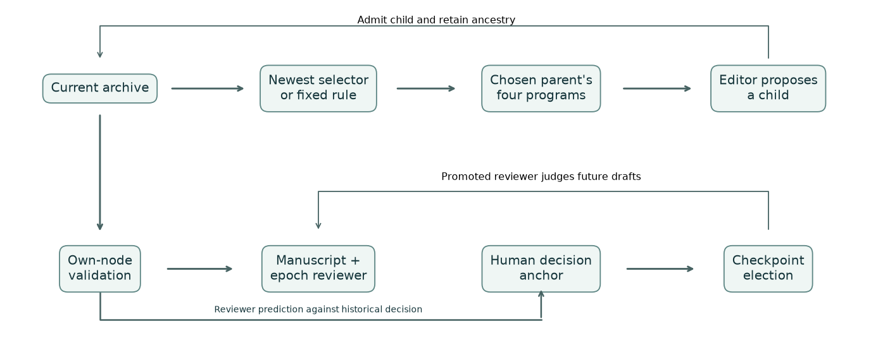

Paper review experiment
Editable parent selection
Does letting an agent choose which ancestor to improve produce a more accurate paper reviewer?
Search monitor
Loading the latest observation…
Validation accuracy and writer reward
Reviewer WriterEach point pools records active at that validation step, before any election at the same step. Vertical marks show reviewer replacements.
Architecture and lineage

Expansion choices and selector source
Reviewer outcomes
Example outputs
Manuscript audit
Acknowledgments headings by historical decision, before and after the cleaning amendment.